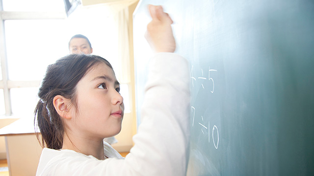

昔の教え子に会うことがあります。
訪ねてくる場合もあれば、偶然出会うこともある。
彼らと話していると、ある共通点に気づきます。
小中学生だった頃、つまり思春期の頃のことをあまり覚えていないのです。
私はいつもこれを「面白い現象」だと感じています。
だいぶ前にこんなことがありました。
教え子だった女性に繁華街で声をかけられたのです。
「先生、久しぶり～」とニコニコしています。
その子は私に対してとても反抗的だったので忘れるはずもありません。
歴代反抗女子ベストスリーに入るくらいといってよいでしょう。
「あ～君か！ 君にはずいぶん手を焼いたなぁ」と私は思わず口に出してしまいました。
その子は中3の時、入試前に不安定になりよく塾の廊下を奇声を発して走り回ったりしていました。
「うるさい！」と注意すると「何よー私ばかり叱って。先生、私のこと嫌いなんでしょ！」とすかさず変な理屈で（笑）反撃してくるような子でした。
マァ、受験直前は心が不安定になりこの子のようにハイテンションになる例は多々ありますが、それにしても彼女のように注意するたびにヒステリックに怒鳴り返してくる子は珍しいので強く印象に残っていたわけです。
なので、再会した瞬間さっきのようなセリフが出てしまったのです。
ところが彼女、意外にも「えーっそうだったっけ？」
とソバージュの長い髪をゆらして明るく答えます。
若い娘らしくその屈託のない笑顔からは、決してトボけているわけではないことが分かります。
覚えてないんかい！！
覚えていないのです。（涙）
むろん、全てを忘れ去ったというのではなく、何か先生に叱られたことはあったなぁというボンヤリした記憶だけで、なぜ叱られたのかその理由だとか、やりとりの詳細。そしてどれだけ心配をかけたかなどは全て忘却の彼方…。
彼女に限らず、成人した元教え子たちの多くは自分の思春期の記憶―特に自分がいかに反抗的だったか、いかに親や先生に迷惑をかけたか、フテくされたり部屋の壁を蹴ったり、乱暴なことば使いをしたりなど、日常での自分の言動―を忘れてしまっているのです。
要するに都合の悪いことは忘れている！
特に女子！（笑）
こちらとしては、当時ずいぶんその子を心配したりエネルギーを使ったりした記憶があるだけに、あっけらかんと「そんなことありましたっけ？」などと言われると、何となくガッカリすると同時に、少し淋しい気持ちになります。
私はこの現象を、勝手に「思春期健忘症」と名付けているのですが。
思春期健忘症にはワケがある
とういことで、この思春期健忘症、私なりにその理由を長い間考えてきたのですが、実はよく分かりません。
思春期は中2病といわれるくらい不安定でワケのわからない時期なので、健忘症もそんな「症状」の１つなのだと割り切ることも可能かと思っています。
これまた私の勝手な自説ですが、「思春期とはその人の人生でいちばんヘンな時期である」というのがあります。
１人の人間の一生を見渡したとき、小学校高学年から高校にかけてくらいの時期（思春期）はもっとも「その人らしくない」ときであるという考えです。
これを読んでいる方も、自分の思春期を思い出してみてください。その時期の自分は、それ以前やそれ以後と違った印象を感じるのではないでしょうか。
あの頃だけが今の自分とは違っている。
そんな感覚です。
もちろん多くの方は、思春期健忘症のせいで自分に都合の悪いことは思い出せない（笑）。何か記憶にモヤのかかったような、ボンヤリしたそれでいて妙になつかしい感じがするのではないでしょうか。
「いや、自分は当時のことを鮮明に覚えている！」
という方もいるでしょうが、気を付けてください。それは単に記憶を美化しているだけかも知れません（笑）。
ところで、なぜ思春期が不安定かつ変な（？）時かというと、それこそ発達心理学やら青年心理学などの学説、巷の解説書がこれでもかと言わんばかりに説明してくれています。
さらに急速に自我が発達することによって、自他の比較から過剰なコンプレックス（劣等感）を抱き、些細なことにも傷つきやすくなる…等々。
これだけでもずいぶんやっかいな時期なんだなと思いますよね。
さて、ここからは全く私の個人的見解を書き連ねようと思います。
上の思春期の定義は、ホルモンバランスが悪いとか情緒不安定とか反抗的であるとか、この時期の子どもたちを一種の病理的分析を加えた上で、社会的な未熟者ととらえる考え方です。
いかにも欧米流の分析心理です。というのも、子どもを「不完全な大人」と見なすのが長い間のヨーロッパの伝統だったからです。
このような外側からの分析ではなく、子どもたちの心の中そのものに入りこむとどうなるでしょう。どのような景色が見えるのでしょう。
確かに、思春期の子どもたちは不安定で未熟です。しかし、この時期は人格が統一的に固まっていないからこそ、様々な潜在的可能性が一人の子どもの中に混沌とした状態で渦巻いているのも事実です。
つまり、子どもたちが将来成り得る様々な「可能性の萌芽」がそこには見てとれるのです。
私は30年以上、何百人いや千人以上の思春期の子どもたちを見てきましたが、彼らはいうなれば「可能性の見本市」のようなものだと感じます。
そこには混沌としているが故の「豊かさ」があふれていました。一人の例外もなく。
善と悪。光と闇。美と醜。希望と絶望。歓喜と失意。
人が一生に渡って経験するであろう様々な局面が、そこには凝集した形ですでに渦巻いている。
相反する人間の性質が未分化のまま、一人の人間の中でせめぎ合うその姿は、未熟と切り捨てるには豊かすぎるのです。
しかし本人たちは「自分は何者なのか」が分からず悩み苦しむことになります。
豊かな可能性と苦しみのギャップ。
それこそが私が長年見てきた思春期のリアルな実情といえます。
そんな子どもたちも、思春期を過ぎると「ちゃんとした（？）大人」になります。
確固とした自我のもと、人格は統一され安定したアイデンティティを身につける。
人格が統一されたということは、様々な可能性の中から一つを選び他を捨てたということです。
それは何を意味するかというと、社会のルールや常識に自分を合わせ、なるべく矛盾のない生き方を選んだということです。
言い換えれば、私たちは様々な可能性を捨てることで社会的に成熟した人格を手に入れることができるということです。
これを心理学者ユングは「生きられなかった人生」と呼びました。
大人になるということが、思春期の豊かな可能性を閉ざすことであるならば、大人になることは淋しいことでもある。
なぜなら「生きられなかった人生」がたくさん後に捨てられているからで、それはある意味悲しい光景でもあります。
だから、人は人格を統一し矛盾なく生きていくために思春期の記憶を封印してしまうのかも知れません。
思春期を忘れた元教え子たちに会うとき、一抹の淋しさを感じる理由もそこにあるのでしょう。
しかし、私はこう言いたいのです。
フテくされ悪態を吐き、閉じこもり、コンプレックスに身をこがし、自分が何者か分からずさ迷う少年少女たち。たとえ、そんな自分に嫌悪を感じていたとしても君たちは美しい。
そこには、確かに君らしい、個性（個別性）が輝いている…と。
そういえば、私が中学生
のとき担任がいつも「悩んでいるお前たちの姿は美しい」と言っていたことを思い出しました。
50年近くたった今、私はその意味がよく分かります。